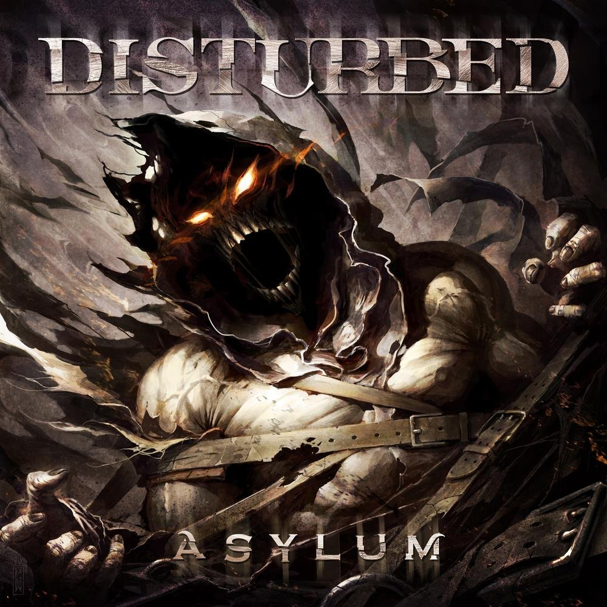
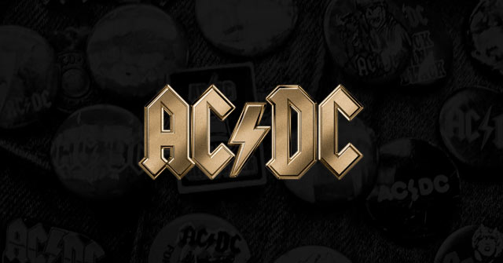

If I am unable to play video games, then you will usually find me listening to music. i usually listen to rock or metal, but somtimes i would listen to a genre of music because im bored.(examples: Russian hard base, sea shanties, etc)
bands I listen to, but are not limited to

